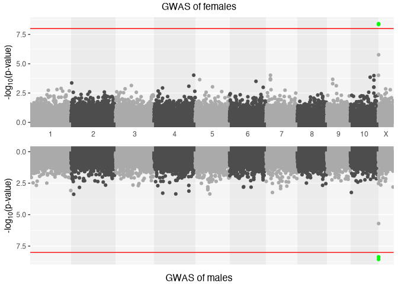
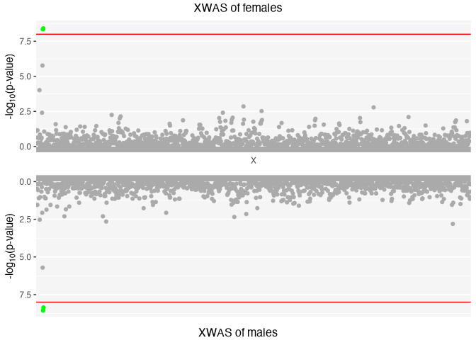
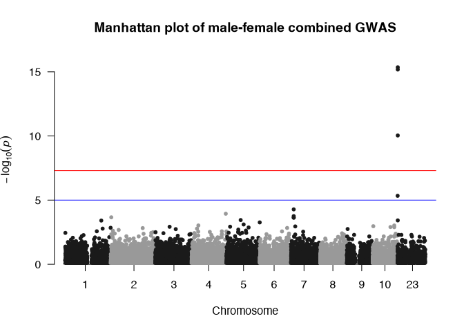
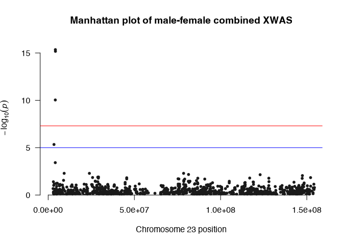
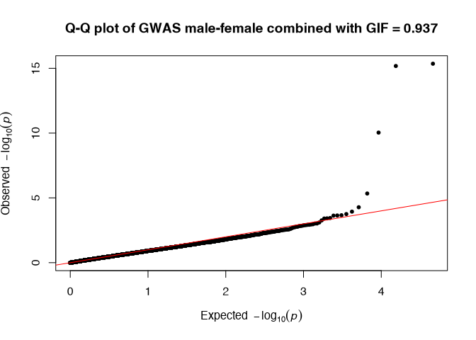
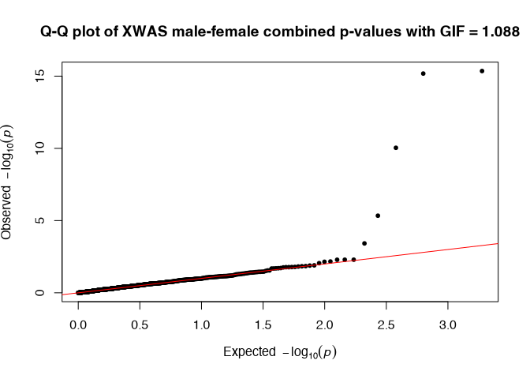

A tool for conducting sex-aware quality control, association analysis, and testing various models of sex-dependent genetic effects in complex traits.
This package implements various statistical genetics models for Genome-Wide Association (GWA) and X-Chromosome Wide Association (XWA) analyses in a sex-combined or sex-stratified way considering X-Chromosome Inactivation (XCI) pattern. In addition to association analysis, the package also enables testing for sex differences in genetic effects, including the implementation of specific models and applying best practices for additional quality control (QC) of genetic data required for these tests. The package includes twenty-five different functions in six different categories (A-F) which enable a comprehensive pipeline for sex-aware genetic association analysis of common variants with unrelated individuals.
(A)Pre-imputation QC: QCsnp(); QCsample(); AncestryCheck(); SexCheck()
(B)Post-imputation QC: QCsnp(); QCsample2(); Xhwe(); MAFdiffSexControl(); FilterRegion()
(C)Sex-combined and sex-stratified GWAS with XWAS: GXwasR()
(D)Sex-differential test: SexDiff(); SexDiffZscore(); DiffZeroOne()
(E)High level analysis: TestXGene(); MetaGWAS(); ComputePRS(); ComputeCorrBT(); EstimateHerit()
(F)Utility Functions: FilterPlinkSample(); ComputeGeneticPC(); ClumpLD(); GetMFPlink(); plinkVCF(); MergeRegion(); FilterAllele(); PlinkSummary()
📦 Installation
You can install the development version of GXwasR from GitHub with:
# install.packages("pak")
pak::pak("boseb/GXwasR")External Dependencies
This package requires PLINK and GCTA, two widely used command-line tools for genetic data analysis:
- PLINK: A toolset for genome association and linkage analysis.
- GCTA: Genome-wide Complex Trait Analysis, used for estimating genetic relationships and variance components.
Please follow the instructions below to ensure both tools are installed and available to your system before use.
PLINK
This package depends on the PLINK command-line tool (version 1.9). PLINK must be installed separately and made available on your system.
PLINK is not bundled with this package and must either:
- (preferred) be specified via the PLINK_PATH environment variable, or
- be on your system PATH.
🔧 PLINK Installation Instructions
Binaries for all major platforms can be downloaded from:
Detailed, platform-specific setup instructions can be found in the INSTALL file included with this package.
🧭 Configuring the PLINK Path
This package will attempt to locate PLINK using:
- The
PLINK_PATHenvironment variable, if set. - The system path, via
Sys.which("plink").
If PLINK is not found, an error will be raised with guidance on how to resolve it.
You can manually set the path in your R session:
Sys.setenv(PLINK_PATH = "/path/to/plink")For a persistent configuration, you can add this line to your .Renviron file:
To verify that PLINK is discoverable:
plink_path <- Sys.getenv("PLINK_PATH", unset = Sys.which("plink"))
if (!file.exists(plink_path) || !nzchar(plink_path)) {
stop("PLINK binary not found. Please install PLINK and/or set the PLINK_PATH environment variable.")
}GCTA
This package also utilizes the GCTA command-line tool (Genome-wide Complex Trait Analysis). GCTA must be installed separately and made available on your system.
GCTA is not bundled with this package and must either:
- (preferred) be specified via the GCTA_PATH environment variable, or
- be on your system PATH.
🔧 GCTA Installation Instructions
Binaries for all major platforms can be downloaded from the GCTA website.
Detailed, platform-specific setup instructions can be found in the INSTALL file included with this package.
🧭 Configuring the GCTA Path
This package will attempt to locate GCTA using:
- The GCTA_PATH environment variable, if set.
- The system path, via
Sys.which("gcta64").
If GCTA is not found, an error will be raised with guidance on how to resolve it.
You can manually set the path in your R session:
Sys.setenv(GCTA_PATH = "/path/to/gcta64")For a persistent configuration, you can add this line to your .Renviron file:
To verify that GCTA is discoverable:
gcta_path <- Sys.getenv("GCTA_PATH", unset = Sys.which("gcta64"))
if (!file.exists(gcta_path) || !nzchar(gcta_path)) {
stop("GCTA binary not found. Please install GCTA and/or set the GCTA_PATH environment variable.")
}⚠️ macOS Security Warning
macOS may block these applications from launching because they were downloaded from the internet and aren’t explicitly approved by Apple. If you see a warning like:
You can still run the app by following these steps:
- Open System Settings (or System Preferences on older macOS versions).
- Go to Privacy & Security.
- Scroll down to the Security section.
- You should see a message about the blocked app — click “Open Anyway”.
- Confirm when prompted.
For more details, see Apple’s official guide: https://support.apple.com/en-us/102445
Example Analysis
Run a genome-wide association study (GWAS) and X-chromosome-wide association study (XWAS):
library(GXwasR)
#>
#> GXwasR: Genome-wide and x-chromosome wide association analyses applying best practices of quality control over genetic data
#> Version 0.99.0 () installed
#> Author: c(
#> person(given = "Banabithi",
#> family = "Bose",
#> role = c("cre", "aut"),
#> email = "banabithi.bose@gmail.com",
#> comment = c(ORCID = "0000-0003-0842-8768"))
#> )
#> Maintainer: Banabithi Bose <banabithi.bose@gmail.com>
#> Tutorial: https://github.com
#> Use citation("GXwasR") to know how to cite this work.
ResultGXwas <- GXwas(
DataDir = system.file("extdata", package = "GXwasR"),
ResultDir = tempdir(),
finput = "GXwasR_example",
trait = "binary",
xmodel = "FMstatrified",
covarfile = NULL,
sex = TRUE,
xsex = FALSE,
combtest = "fisher.method",
MF.p.corr = "none",
snp_pval = 1e-08,
plot.jpeg = FALSE,
suggestiveline = 5,
genomewideline = 7.3,
MF.mc.cores = 1,
ncores = 0
)
#> • Running FMstatrified model
#> Using PLINK v1.9.0-b.7.7 64-bit (22 Oct 2024)
#> • Stratified test is running
#> • Stratified test is running
#> • If you want parallel computation, please provide non-zero value for argument ncores.
#> • If you want parallel computation, please provide non-zero value for argument ncores.
#> ℹ Plots are initiated.
#> ℹ Saving plot to /var/folders/d6/gtwl3_017sj4pp14fbfcbqjh0000gp/T//Rtmp949z4L/Stratified_GWAS.png
#> This message is displayed once every 8 hours.
#> ℹ Saving plot to
#> /var/folders/d6/gtwl3_017sj4pp14fbfcbqjh0000gp/T//Rtmp949z4L/Stratified_XWAS.png
#> • Three dataframes such as, CombinedWAS, MaleWAS and FemaleWAS are produced
#> in/var/folders/d6/gtwl3_017sj4pp14fbfcbqjh0000gp/T//Rtmp949z4L
ResultGXwas
#> $CombinedWAS
#> Key: <SNP>
#> SNP CHR BP P
#> <char> <int> <int> <num>
#> 1: rs10000405 4 47716881 0.97684636
#> 2: rs10000452 4 63234460 0.69697101
#> 3: rs10000465 4 120835814 0.53783097
#> 4: rs10000605 4 13875675 0.72216716
#> 5: rs10000675 4 121520624 0.82462199
#> ---
#> 23089: rs9997486 4 72333579 0.50805172
#> 23090: rs9997787 4 37866912 0.34794418
#> 23091: rs9998003 4 187293933 0.06428729
#> 23092: rs9998694 4 59730463 0.08565972
#> 23093: rs9999463 4 166351966 0.42240473
#>
#> $MaleWAS
#> CHR SNP BP A1 TEST NMISS BETA SE L95
#> <int> <char> <int> <char> <char> <int> <num> <num> <num>
#> 1: 1 rs143773730 73841 T ADD 125 -0.07890 0.2643 -0.5968
#> 2: 1 rs147281566 775125 T ADD 125 -0.39590 1.2380 -2.8230
#> 3: 1 rs35854196 863863 A ADD 125 1.05000 0.8858 -0.6864
#> 4: 1 rs12041521 1109154 A ADD 125 -0.44510 0.3387 -1.1090
#> 5: 1 rs148527527 1127860 G ADD 125 1.67700 0.6864 0.3317
#> ---
#> 24135: 23 rs113460214 154103785 G ADD 125 2.00100 1.1110 -0.1771
#> 24136: 23 rs5945265 154196387 A ADD 125 -0.23380 0.5514 -1.3150
#> 24137: 23 rs191928457 154429518 C ADD 125 1.44900 1.1690 -0.8426
#> 24138: 24 rs9785994 16222561 T ADD 36 -0.47000 0.9811 -2.3930
#> 24139: 24 rs201216761 22113254 A ADD 38 -0.09353 0.8447 -1.7490
#> U95 STAT P
#> <num> <num> <num>
#> 1: 0.4390 -0.2986 0.76530
#> 2: 2.0310 -0.3197 0.74920
#> 3: 2.7860 1.1850 0.23600
#> 4: 0.2188 -1.3140 0.18890
#> 5: 3.0220 2.4430 0.01456
#> ---
#> 24135: 4.1790 1.8010 0.07177
#> 24136: 0.8469 -0.4241 0.67150
#> 24137: 3.7410 1.2390 0.21520
#> 24138: 1.4530 -0.4791 0.63190
#> 24139: 1.5620 -0.1107 0.91180
#>
#> $FemaleWAS
#> CHR SNP BP A1 TEST NMISS BETA SE L95
#> <int> <char> <int> <char> <char> <int> <num> <num> <num>
#> 1: 1 rs143773730 73841 T ADD 151 0.3459 0.2818 -0.2064
#> 2: 1 rs147281566 775125 T ADD 151 0.1568 0.9290 -1.6640
#> 3: 1 rs35854196 863863 A ADD 151 -0.1446 0.7282 -1.5720
#> 4: 1 rs115490086 928969 T ADD 151 0.5649 1.4240 -2.2270
#> 5: 1 rs12041521 1109154 A ADD 151 -0.6697 0.3314 -1.3190
#> ---
#> 24355: 23 rs2097214 153652198 G ADD 151 -0.4137 0.5158 -1.4250
#> 24356: 23 rs113519705 153715153 T ADD 151 0.2942 0.3751 -0.4409
#> 24357: 23 rs113460214 154103785 G ADD 151 -0.7779 0.5943 -1.9430
#> 24358: 23 rs5945265 154196387 A ADD 151 0.5425 0.3360 -0.1160
#> 24359: 23 rs191928457 154429518 C ADD 151 -1.4460 1.0830 -3.5690
#> U95 STAT P
#> <num> <num> <num>
#> 1: 0.89820 1.2270 0.21970
#> 2: 1.97800 0.1688 0.86590
#> 3: 1.28300 -0.1985 0.84260
#> 4: 3.35700 0.3966 0.69170
#> 5: -0.02008 -2.0210 0.04332
#> ---
#> 24355: 0.59740 -0.8019 0.42260
#> 24356: 1.02900 0.7844 0.43280
#> 24357: 0.38700 -1.3090 0.19060
#> 24358: 1.20100 1.6150 0.10640
#> 24359: 0.67610 -1.3360 0.18170Code of Conduct
Please note that the GXwasR project is released with a Contributor Code of Conduct. By contributing to this project, you agree to abide by its terms.